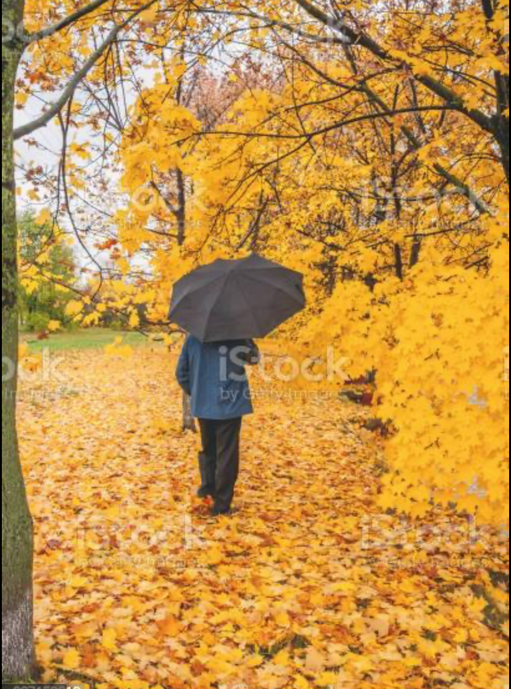

Autumn Season
Autumn, also known as fall in North American English It is one of the four temperate seasons. Outside the tropics, autumn marks the transition from summer to winter, in September or March, when the duration of daylight becomes noticeably shorter and the temperature cools considerably. Day length decreases and night length increases as the season progresses until the Winter Solstice in December and June. One of its main features in temperate climates is the striking change in colour for the leaves of trees as they prepare to shed and this procces is called autumn.
